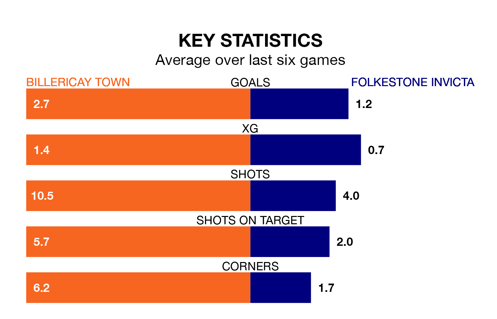

Billericay Town are heavy favourites to keep all three points at home in Saturday's kick-off against Folkestone Invicta.
Billericay, who sit third in Isthmian Premier Division with 26 games played, are priced at 1.4 to seal victory at the AGP Arena.
Sitting 14 places and 23 points behind them in the table, Folkestone Invicta are 5.0 to win with *Betting Company*, while the draw is at 4.5.
In the last 10 years, Billericay and Folkestone Invicta have played each other on seven occasions. Billericay won one of them, Folkestone Invicta four, and they drew twice.
On average, Billericay scored 1.0 goal and Folkestone Invicta 1.4 in those matches.
Their last meeting was on November 11, when Folkestone Invicta won 1-0 at home.
With 36 goals in 27 games so far this season, Folkestone Invicta are scoring at below the league average rate with 1.3 goals per game. And they are conceding more than average, letting in 46 goals at a rate of 1.7 per game.
Billericay, meanwhile, are above average scorers, with 1.7 goals per game, compared to a league average of 1.6. They have conceded 0.8 goals per game.
Town are in good form in Isthmian Premier Division, with four wins and a draw from their last six games.
With a win and three draws over that period, the visitors' form is much worse – they have taken six points from 18, compared to the home team's 13.
Billericay's last match was on Tuesday, a 2-1 win against Enfield Town.
Folkestone Invicta lost 2-0 against AFC Hornchurch last time out, also on Tuesday.
Updated: 10:40 (UTC), 01/02/24